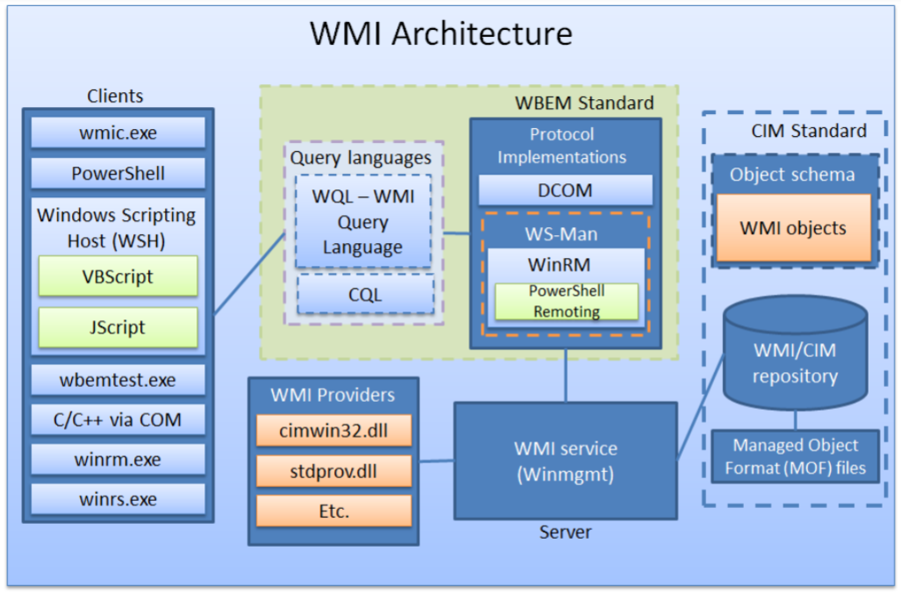
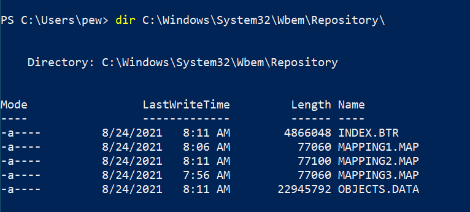
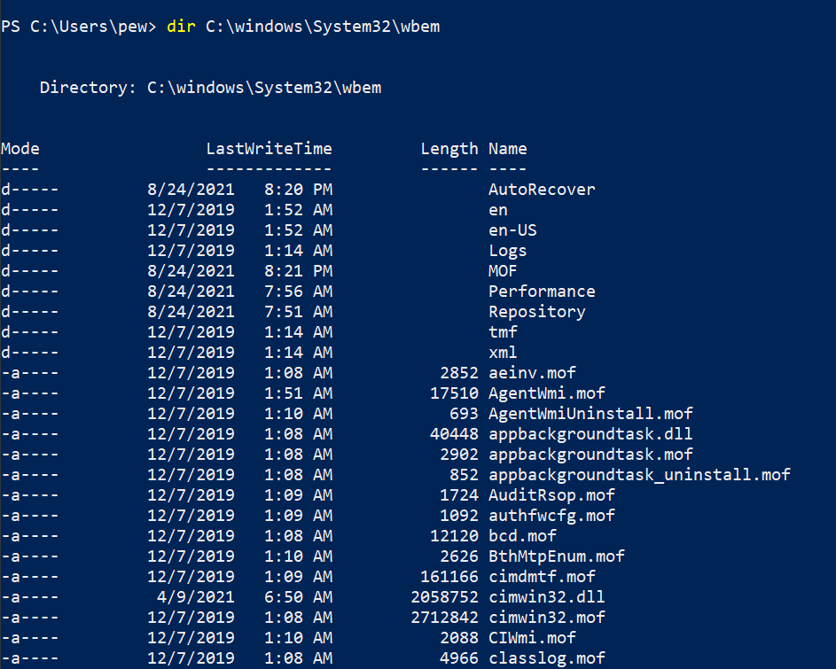
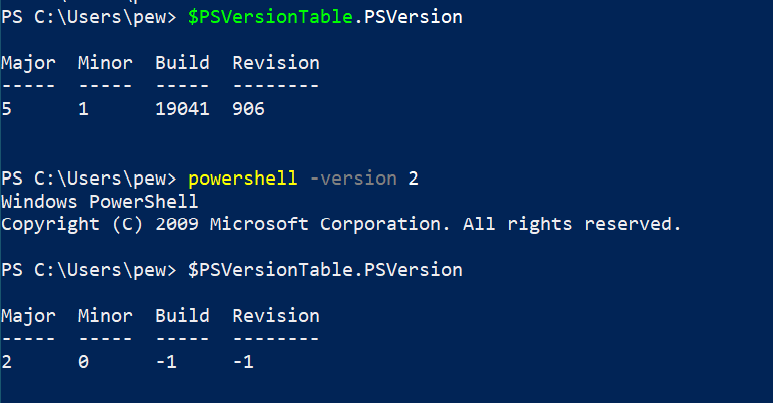
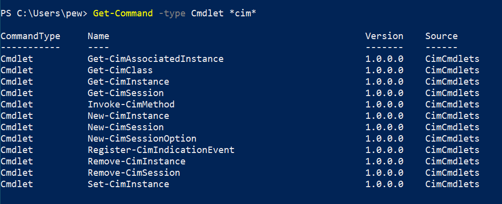

Offensive WMI - The Basics (Part 1)
This blog post is the first of a many part series on WMI and is intended for fairly new audiences. A basic understanding of Powershell will definitely help the reader while going through the blog, however, it is not a requirement. That’s it, let us jump into the real stuff.
Introduction
Why WMI?
WMI is a set of specifications from Microsoft that was designed for fast and efficient administration when it comes to Windows systems. And as you might know, a rule of security says “that anything useful for administration is also great at being abused by evil-doers”. WMI can really do a lot of things – from gathering statuses of computers and configuring settings to running applications and executing code. Moreover, WMI is present on all available Windows OS versions, so targeted surface is quite broad here.
What is WMI?
Let’s quickly go over a few important terms. WMI stands for Windows Management Instrumentation, which is Microsoft’s implementation of the CIM (Common Information Model) & WBEM (Web-Based Enterprise Management) – both of which are DMTF (Distributed Management Task Force) standards in general. WMI gives us a neat and uniform interface for applications/scripts to manage a computer (maybe remote and local) – incl. processes, services, etc.
The WMI Architecture
Understanding the architecture is very essential to understanding how the entire WMI ecosystem works. A broad overview of the architecture of WMI is depicted below (sourced from Graeber’s talk from BHUSA 15):
Let’s break down the major components one by one:
-
Clients/Consumers: These are essentially the end consumers which interact with WMI classes for querying data, running methods, etc. Few prominent clients include
wmic.exe,wbemtest.exe,winrm.exe, VBScript/JScript and ofc Powershell cmdlets. -
Query Languages: Just like SQL provides you with a way to query a database, WMI too has WQL (WMI Query Language) / CQL for querying the WMI service. When it comes to managing remote boxes, the WBEM standard kicks in – which include DCOM and WS-Man. WQL is basically SQL syntax for WMI.
A simple query may look like this:
select * from win32_bioswhich gives us information about our BIOS.
-
Repositories: These are the databases that we talked about previously that stores all static data (definitions) of classes. The repositories are defined by MOF (managed object format) files which define the structure, classes, namespaces, etc. The database files can be found under the
%WINDIR%\System32\Wbem\Repositorydirectory. -
MOF Files: MOF files are basically used to define WMI namespaces, classes, providers, etc. You’ll usually find them under the
%WINDIR%\System32\Wbemdirectory with the extension.mof. In a later part of the series, we’ll take a look at how we can write our own MOF files to extend the feature-set of WMI. -
Providers: Whatever is defined in the repositories can be accessed with the help of WMI providers. They are usually DLL files and associated with a MOF file –
cimwin32.dll,stdprov.dll, etc to name a few, however, they can take the form of other types as well (Class, Event, Event Consumer, Method, etc). The providers are essential to the ecosystem because they monitor events and data from specific defined objects. Think of providers like drivers which provide a bridge between managed objects and WMI.In the screenshot below, the DLL files are the providers of the associated MOF files:
 -
Managed Objects: These are aliases of the resources in context, i.e. a managed object can be the service, process or OS being managed by WMI.
-
Namespaces: Put simply, namespaces are logical divisions of classes meant for easy discovery and usage. They are divided into 3 groups:
- system
- core
- extension
and 3 types:
- abstract
- static
- dynamic
Few prominent namespaces that come by default are:
root\cimv2,root\default,root\security,root\subscription, etc.
That’s it with the architecture. Now let’s learn a bit about using WMI with Powershell.
Using WMI with Powershell
Now that we’re done with the theory part, let’s quickly spawn a PS terminal. It is important to remember that up to v2 of Powershell, there are only a few cmdlets to interact with WMI. We’ll quickly check our Powershell version and change the version to 2:
Now, lets run Get-Command -CommandType Cmdlet *wmi* in a Powershell prompt. This leads us to:
TIP: The names of the commands are pretty self-explanatory (and we’ll dig into more later as well). At any point in time, you can use Powershell’s standard syntax:
help <command>to get more info on what the specific command does. e.g. you might want to tryhelp Invoke-WmiMethodto view what the command does – very similar to Linux manpages.
From Powershell v3 onwards, MS introduced CIM cmdlets which make use of WS-MAN and CIM standards to manage objects. Having access to CIM cmdlets has advantages in 2 contexts:
- In machines where WMI/DCOM itself is blocked from running (maybe due to a host-based firewall rule?) but WinRM/WS-MAN (Windows Remote Management) is enabled, we can still use CIM to do exactly what we can do with WMI.
- CIM itself is an industry-standard and is implemented cross-platform, which means it can be used to work with non-Windows boxes as well.
Phew! That’s a mouthful of words. Let’s understand what the new terms here mean:
DCOM: An alias for Distributed Component Object Model, DCOM is a proprietary Microsoft protocol for communication between software components on networked computers. WMI uses Distributed COM (DCOM) to connect to a remote machine. However, DCOM isn’t that firewall-friendly.
WS-MAN: WS-MAN or WS-Management is a DMTF standard that provides a common way for systems to access management information across the IT infrastructure. WS-MAN on the other hand uses HTTP, so is definitely firewall-friendly.
We’ll redo what we did above, but after changing the Powershell version back to default (in my case I’ve Powershell v5):
Repeating what we said above, CIM cmdlets can do everything that WMI cmdlets can. If we want to map the functionalities between both WMI cmdlets and CIM cmdlets, here’s a tabular representation of the functionality comparison between both types:
| Use \ Types | WMI Cmdlets | CIM Cmdlets |
|---|---|---|
| Get information about classes | Get-WmiObject |
Get-CimInstance |
| Invoking a method | Invoke-WmiMethod |
Invoke-CimMethod |
| Subscribing to an event | Register-WmiEvent |
Register-CimIndicationEvent |
| Creating/updating instances of a class | Set-WmiInstance |
Set-CimInstance |
| Deleting instances of a class | Remove-WmiObject |
Remove-CimInstance |
Running WMI queries with Powershell
Now that we know about the different cmdlets available for us to use, we can try running the sample WQL query above. We already know that Get-WmiObject can be used to get info about classes. So let’s run the cmdlet with the -Query parameter:
Get-WmiObject -Query 'select * from win32_bios'
Conclusion
This blog post was meant for giving an overview of what we’ll be dealing with in the next parts of the series. I hope you enjoyed reading through so far, and I’m looking forward to our journey together into exploring WMI.
Adios amigo!